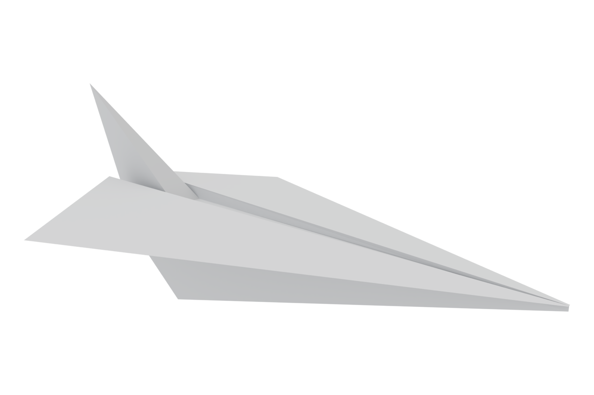
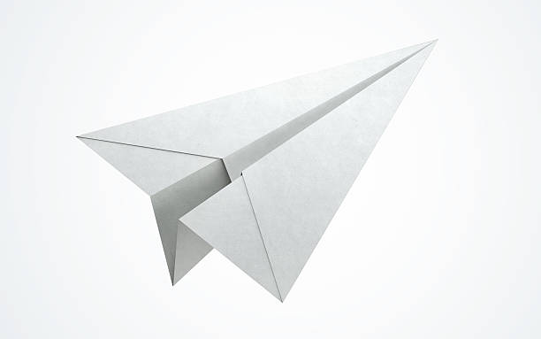
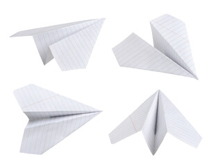

Paper airplanes operate on the same basic principles of aerodynamics as real aircraft, relying on the balance of lift, weight, thrust, and drag. When a paper glider is thrown, the initial forward force acts as thrust, while the shape of the folded wings generates lift by displacing air downwards. Standard printer paper is commonly used due to its ideal weight and crisp folding characteristics, allowing builders to create sharp creases that keep the wings aerodynamic and stable during flight.
Performances of paper planes depend heavily on their design and center of gravity. Dart styles feature narrow wings and a heavier nose, making them ideal for long-distance, fast, and straight flights. On the other hand, glider designs utilize wider wing surfaces to maximize lift, enabling them to stay airborne for longer periods at slower speeds. Adjusting the back edges of the wings by making small upward folds can create an elevator effect, helping to correct the plane's flight path if it dives too quickly.
